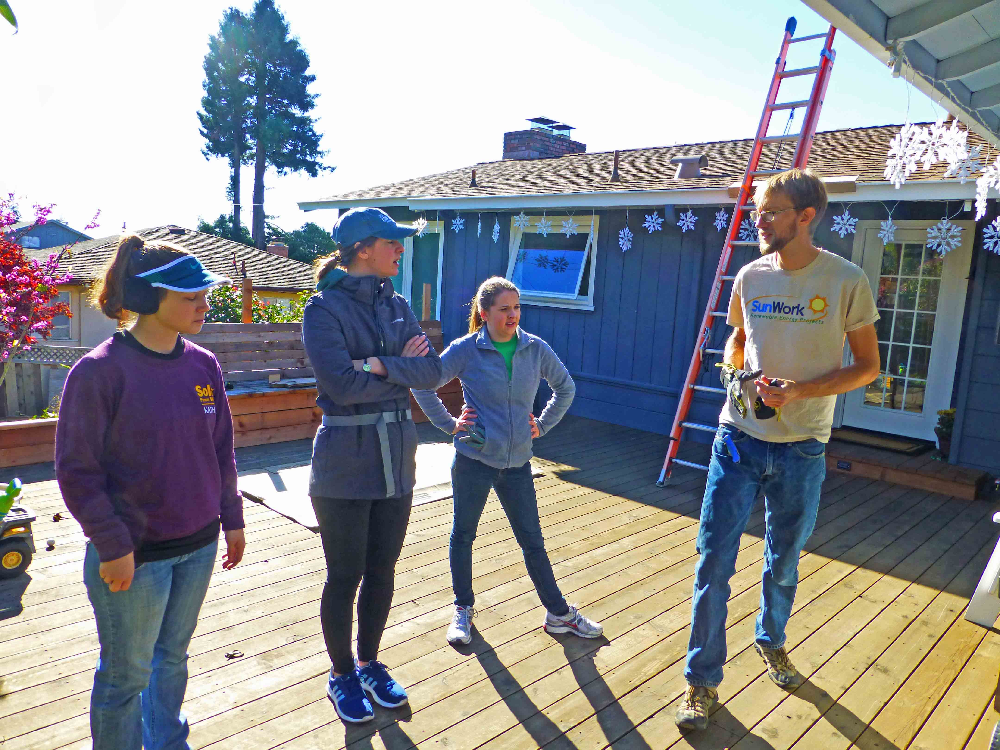

News
The latest news about SunWork, energy, the environment,
and solar power:
1/22/2018 Boys & Girls Clubs' Bell Haven Clubhouse Installs Solar
Panels & Showcases Clean Energy for Youth
- Thanks to support from SunWork, Facebook and Menlo Spark
1/8/2018 SunWork wins 2017 award from Yelp
"People Love Us on Yelp"
1/12018 Solar Power World Editors volunteer on SunWork
installation - article and podcast
12/3/2017 Solar comes to California Central Coast
Sierra Club - Condor Call, page 5
9/22/2017 Going solar lets Thrift Box help children's hospital
- Mercury News - Willow Glen section
(subscription required)
8/23/2017 Top ten Renewable Energy Companies
Making a Positive Difference in the World
by Disruptor Daily
8/4/2017 Solar nonprofit, volunteers, celebrate milestone
at Berkeley home - Mercury News
5/22/2017 Solar Power World interviews SunWork - podcast
California contractor inspired by
'Habitat for Humanity' model
4/1/2017 SunWork training integrated into De Anza College
course ES 84 Residential Solar Design & Installation
2/22/2017 SunWork #6 most reviewed installer on
SolarReviews across US & highest rated in
California
(4.98
out of 5) for installers
with over 60 reviews
1/25/2017 SunWork wins 2016 award from Yelp
"People Love Us on Yelp"
1/18/2017 SunWork wins Sustainable San Mateo
County "2017 Sustainability Award"
Check out the video
11/19/2016 Petaluma Homeless Shelter Expands
Solar Network
The Argus Courier
11/18/2016 San Leandro church goes solar
Episcopal News Service
and DioBytes
9/9/2016 Customer video of SunWork installation
4/8/2016 Parish Taps into Renewable Energy
The Valley Catholic
1/13/2016 Sunnyvale Heritage Museum
to get solar panels
San Jose Mercury News
8/19/2015 Google Launches 'Project Sunroof '
to Scan Rooftops for Solar Potential
Governors' Wind Energy Coalition
8/18/2015 New Google Tool: Calculates Costs,
Benefits of Solar Panels
San Jose Mercury News
8/17/2015 Solar curious? Google your roof
San Francisco Chronical
8/7/2015 Volunteers Construct Solar Savings:
Nonprofit SunWork Installs Solar Systems in Bay
Area
Palo Alto Weekly
6/9/2015 Everybody Solar Goes Wild: Installation
Complete at Wildlife Associates
PVSolarReport.com - Installation
done with funding partner Everybody
Solar
10/27/2014 Other Avenues, RE-volv & SunWork Team Up
For Innovative New Solar Project
Cleantechnica.com - Installation
done with funding partner RE-volv.
3/5/2014 Kehilla Community Synagogue Goes Green, Installs
Solar Project. InsideBayArea.com
Check out the time-lapse video of the
installation done with funder RE-volv.
2/13/2014 Sunnyvale Home Recipient of NonProfits 100th Installation. Sunnyvale Sun article.
2/6/2014 A New Way to Finance Solar. Article on FastCoexist.com.
1/30/2014 Drought's Silver Lining: Solar Panels Look Hotter Than Ever. GreenTown Los Altos blog
1/26/2014 SunWork volunteers celebrates 100th installation. See Photos.
1/21/2014 No More Rain Means Plenty of Sun. Patch.com on SunWork Los Altos installation.
12/3/2013 Three Ways You Can Participate in the Solar Revolution on this Giving Tuesday.
9/27/2013 En Route to Zero Net Energy - Solar home tour
offers practical advice for going green
Click here
for more information.
06/15/2013 -- SunWork and RE-volv celebrate solar installation for nonprofit Shawl-Anderson Dance Center here.
04/22/2013 -- GreatNonprofits Announces Palo Alto Has Most Top Rated Environmental Nonprofits in California.
03/27/2013 -- SunWork brings solar power to small-footprint homeowners.
3/20/2013 -- SunWork chosen by RE-volv for solar system
installation at nonprofit Shawl-Anderson Dance Center in Berkeley.
Here is an East Bay Express article on the
Shawl-Anderson Dance Center installation and innovative funding model
by nonprofit RE-volv.
02/04/2013 -- SunWork selected for Installation at Nonprofit, Rebuilding Together Peninsula
01/07/2013 -- SunWork honored as 2012 top rated nonprofit
10/3/2012 -- Palo Alto Weekly article on No Energy Wasted Here on the 2012 Solar Home Tour sponsored by SunWork.
02/18/2012 -- SunWork now has Facebook page -- use the link on the bottom left of this site, or check it out here .
10/02/2011 -- The folks at the Catholic Worker House of Redwood City have now finished their first month receiving their power from the solar electricity system that they installed there with SunWork. Read more about the project in the news coverage from the time of the installation, provided by the Examiner here and by Redwood City Patch here.
03/23/2011 -- SunWork's program gets another nod in a Greentech Media piece, one that touches on "the softer benefits of distributed energy and renewables, as well as the humanitarian aspects of the green energy business and its people". It can be read here.
03/23/2011 -- Cupertino's 2011 Earth Day Festival will be held on Saturday, April 9, and SunWork will be there. The event, from 10am to 2pm, will be a day of celebration, education, and action to grow a sustainable community. View the flyer to see a list of different activities and workshops that the festival will include here, then come out and meet us at the event.
02/22/2011 -- Eric Wesoff at Greentech Media: SunWork brings solar to underserved markets. And trains a new crop of rooftop solar installers.
01/15/2011 -- SunWork will be making a showing at two upcoming events on the Peninsula: "Solar Options for Your Home", part of Redwood City's Verde Talk green education and mixer series on January 19th, and "A New Approach to Affordable Solar Electricity", a special event by Acterra in Palo Alto on January 31st. Both events are free and open to the public. Click on the links to view the event flyers and find out more.
10/13/2010 -- SunWork is in the news on Palo Alto Patch. View the story about SunWork's most recent install in Palo Alto here.
09/09/2010 -- SunThink! 1.2 is now compatible with Scilab 5.2.2, the most recent stable release of its parent platform. With this development, SunThink! is now available to Windows, MacOSX, and Linux users. Click here to get the version of Scilab for your operating system.
09/07/2010 -- SunThink! version 1.2 is now available. In addition to major gains in computational efficiency and a number of minor changes to the user interface to make it more streamlined and robust, version 1.2 introduces more acurate month-to-month cloud-coverage modeling from the addition of asymmetrical model coefficients, the ability to associate multiple shade profile points into a set for more acurate modeling of the impact of partial shading on series strings of modules, and the option of more precise dynamic month-to-month temperature adjustment of predicted system output by using local historical average daily high temperature information together with commonly published module nominal operating temperature and maximum power temperature coefficient values. It can be downloaded here.
08/11/2010 -- The Almanac News has featured an article covering SunWork's recent first install in Menlo Park. It can be read online on the paper's website here, or a copy of the entire edition including the article with photos is available here.
06/01/2010 -- Photos have now been posted on the installation photos page from SunWork's trio of recent installs in Sunnyvale.
03/10/2010 -- Catch SunWork in the news? Read the newspaper article run by the Sunnyvale Sun about SunWork's most recent install here.
02/15/2010 -- Photos are up from the latest SunWork install in Sunnyvale on the installation photos page. The customer also has some of her own up here, too!
08/04/2009 -- New photos from the latest SunWork installation in Livermore have been posted. They can be viewed on the installation photos page.
04/24/2009 -- The SunThink! 1.1 beta is now up and running, featuring full shading analysis capabilities. It can be downloaded here.
02/09/2009 -- The beta version of our SunThink! Solar Electricity System Analysis Software 1.0 has just been released for use, available for download.
10/03/2008 -- The U.S. Congress has extended the existing federal tax credit on solar installations, which had been set to expire at the end of 2008, for 8 more years. (Hooray!) Click to view the press release from the Solar Energy Industries Association for more details on the bill, a link to the full text, and a history of the investment tax credit for solar.
11/26/2007 -- SunWork's board of directors has held its first meeting. Click to view the minutes from the meeting, or to read a little about SunWork's directors, click here.
11/17/2007 -- The U.N. Intergovernmental Panel on Climate Change has released a synthesis report assessing the risks of inaction on climate change. Click to read the New York Times and Washington Post articles.
Read Reviews from Past Customers | Request a Free Site Survey-